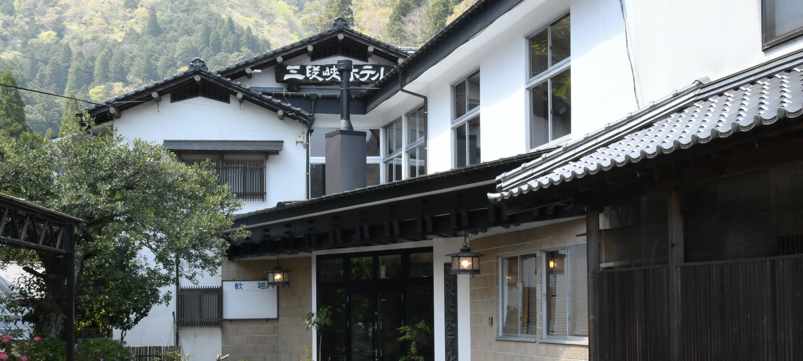

当旅館について
ごあいさつ
三段峡ホテルは渓谷美として名高い特別名勝「三段峡」の入り口に位置する、静かでゆっくりおくつろぎいただける純日本旅館です。
窓からは四季折々の移り変わりが膚で感じられ、春の新緑、秋の紅葉、バードウォッチングのほか、初夏にはホタルや夏の川遊び、森林浴も楽しめる抜群な眺望です。お料理は自慢の自家製山菜・川魚、お風呂はラジウム温泉をお楽しみいただけます。
また、当館は「シルバースター登録旅館」のため高齢者の方も安心してご利用ください。
広島県の世界遺産である安芸の宮島や原爆ドーム、島根県石見銀山の中間地点でもありますので、世界遺産巡りの旅にも是非お役立てくださいませ。
歴史
昭和4年、当館先代の創業者、髙下常市が三段峡入口に建てたのが「峡南館」という旅館でした。
昭和6年、広島市の大富豪である羽田氏が、峡内「葭ケ原」で「羽田山荘」の営業を開始、7年には「峡南館」を吸収合併し、当館の前身となる「三段峡羽田別荘」を建設、髙下常市は総支配人となりました。
戦時中の昭和18年、「広島陸軍病院三段峡療養所」として陸軍に、終戦後は進駐軍に接収されますが、引き続き管理人の任にあたりました。
常市は五人兄弟姉妹の長男でした。尋常小学校時代に父親を亡くし、中退して働かねばならず、字を満足に書けない、ましてや英語はチンプンカンプン。進駐軍の兵士たちが「ホテル」と言っているのを聞いて、こういった旅館をホテルと呼ぶのかと理解したといいます。
進駐軍撤退後、原爆により焼き尽くされた本家の「広島羽田別荘」は、「三段峡羽田別荘」を土台のみ残して解体、再建のため全て広島市に引き上げました。
昭和31年、髙下常市は跡地に「三段峡ホテル」を建設、現存するものとしては広島で最も早く「ホテル」と名が付いた建物であり、当時の中国新聞に「便利になった探勝 三段峡ホテル完成」と掲載されました。
三段峡は、今でこそ神秘的で変化に富む、新緑と紅葉の美しい景勝地として有名ですが、大正時代中頃までは一部の人しか知られていませんでした。
この地を日本有数の名勝地に育てた最大の功労者が、写真家の熊南峰（1876〜1943）です。
大正6年に「竜ノ口」と「三段滝」に出逢って以来、渓谷の織り成す自然美に魅せられ、撮影した写真を通じて魅力を紹介するとともに「史跡名勝天然紀念物保存法」の指定を受ける運動を起こしました。
勤務地の広島市の写真館に帰ることなくこの地に滞在し、毎日のように峡中の調査を続け、名勝指定に必要な書類の作成に取り組みました。また多くの人が入峡出来るように道を付ける活動をし、宿泊施設の建設を働きかけました。
こうした努力によって大正14年10月8日、三段峡(南峰の命名)は国の名勝指定を受けることに成功しました。
少し戻って大正6年、13歳だった髙下常市は、来峡したばかりの熊南峰を案内したのをきっかけに氏に心酔し、人生を三段峡にかけることとなります。
大正8年、南峰に黒淵で渡し舟をすることを勧められ、洞穴に住み込んで筏を作り、三段峡観光の先駆けとなる渡し舟を始めました。
大正15年、黒淵に「黒渕荘」を建設し、妻ハルノを娶り二人だけで旅館業をスタートさせました。
熊南峰は三段峡を人々の癒しの場とし、過度の奢侈を嫌い、地元で採れる食材を用いてこそ「おもてなし」であると説きました。
三段峡ホテルは、このような氏の教えを代々に伝え続けます。
昭和31年 中国新聞掲載記事
三段峡ホテル完成予想図
建設中の三段峡ホテル
会社概要
| 社名 | 株式会社 三段峡の宿 |
|---|---|
| 旅館名 | 三段峡ホテル |
| 住所 | 〒731-3813 広島県山県郡安芸太田町大字柴木1734 |
| Tel | （0826）28-2308 |
| Fax | （0826）28-2290 |
| 設立 | 昭和31年 |
| 代表取締役 | 高下 務 |